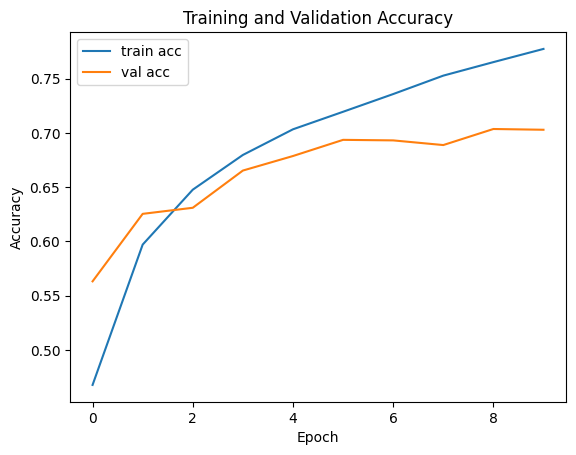
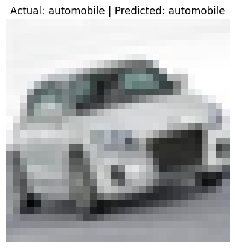

Implementing Convolutional Neural Networks using Tensorflow¶
Convolutional Neural Networks (CNNs) are a class of deep learning models that excel at working with image data. Instead of processing each pixel independently (like in a fully connected neural network), CNNs use filters (or kernels) to scan across the image, capturing spatial hierarchies and local patterns like edges, textures, and shapes.
AI Summary
This document walks through the implementation of a basic Convolutional Neural Network (CNN) using TensorFlow, designed to classify images from the CIFAR-10 dataset. It introduces core CNN components such as convolutional, pooling, and dense layers, and explains their roles in feature extraction and classification. The model is built with TensorFlow's Keras API, trained for 10 epochs, and achieves around 70% test accuracy. Readers will also learn how to visualize training progress and evaluate model performance. This is a great starting point for beginners to understand how CNNs work and how to implement them from scratch.
CNNs consist of layers such as:
-
Convolutional layers, which apply learnable filters to detect features.
-
ReLU activations, which introduce non-linearity.
-
Pooling layers, which reduce spatial size and help generalize.
-
Fully connected layers, which perform final classification based on extracted features.
This architecture allows CNNs to automatically learn useful features from raw pixel data with minimal pre-processing. They're widely used in image recognition, medical imaging, self-driving cars, and more.
Implementation of CNN using Tensorflow¶
1. Import Libraries¶
import tensorflow as tf
from tensorflow.keras import layers, models
import matplotlib.pyplot as plt
import numpy as np
2. Load and Preprocess the Dataset¶
(x_train, y_train), (x_test, y_test) = tf.keras.datasets.cifar10.load_data()
x_train = x_train.astype('float32') / 255.0
x_test = x_test.astype('float32') / 255.0
y_train = tf.keras.utils.to_categorical(y_train, 10)
y_test = tf.keras.utils.to_categorical(y_test, 10)
Downloading data from https://www.cs.toronto.edu/~kriz/cifar-10-python.tar.gz 170498071/170498071 ━━━━━━━━━━━━━━━━━━━━ 3s 0us/step
The CIFAR-10 dataset contains 60,000 32x32 color images in 10 categories. We normalize the image data and one-hot encode the labels for training.
3. Build the CNN Model¶
model = models.Sequential([
layers.Input((32, 32, 3)),
layers.Conv2D(32, (3, 3), activation='relu'),
layers.MaxPooling2D((2, 2)),
layers.Conv2D(64, (3, 3), activation='relu'),
layers.MaxPooling2D((2, 2)),
layers.Flatten(),
layers.Dense(64, activation='relu'),
layers.Dense(10, activation='softmax') # 10 classes
], name="simple-cnn")
model.summary()
This simple CNN has two convolutional layers followed by max-pooling layers. After flattening the features, it passes through two dense layers to produce a probability distribution over the 10 classes.
This is a basic convolutional neural network (CNN) that you’ll often see in introductory deep learning tutorials. This model is inspired by LeNet.
4. Compile and Training the Model¶
model.compile(
optimizer='adam',
loss='categorical_crossentropy',
metrics=['accuracy'],
)
history = model.fit(x_train, y_train, epochs=10, batch_size=64, validation_data=(x_test, y_test), )
Epoch 1/10 782/782 ━━━━━━━━━━━━━━━━━━━━ 10s 7ms/step - accuracy: 0.3820 - loss: 1.7106 - val_accuracy: 0.5632 - val_loss: 1.2533 Epoch 2/10 782/782 ━━━━━━━━━━━━━━━━━━━━ 4s 5ms/step - accuracy: 0.5817 - loss: 1.1892 - val_accuracy: 0.6254 - val_loss: 1.0929 Epoch 3/10 782/782 ━━━━━━━━━━━━━━━━━━━━ 3s 4ms/step - accuracy: 0.6421 - loss: 1.0342 - val_accuracy: 0.6310 - val_loss: 1.0580 Epoch 4/10 782/782 ━━━━━━━━━━━━━━━━━━━━ 5s 4ms/step - accuracy: 0.6757 - loss: 0.9403 - val_accuracy: 0.6653 - val_loss: 0.9575 Epoch 5/10 782/782 ━━━━━━━━━━━━━━━━━━━━ 5s 4ms/step - accuracy: 0.7016 - loss: 0.8715 - val_accuracy: 0.6787 - val_loss: 0.9492 Epoch 6/10 782/782 ━━━━━━━━━━━━━━━━━━━━ 3s 4ms/step - accuracy: 0.7199 - loss: 0.8115 - val_accuracy: 0.6936 - val_loss: 0.8958 Epoch 7/10 782/782 ━━━━━━━━━━━━━━━━━━━━ 3s 4ms/step - accuracy: 0.7385 - loss: 0.7540 - val_accuracy: 0.6931 - val_loss: 0.9070 Epoch 8/10 782/782 ━━━━━━━━━━━━━━━━━━━━ 5s 4ms/step - accuracy: 0.7550 - loss: 0.7088 - val_accuracy: 0.6888 - val_loss: 0.9137 Epoch 9/10 782/782 ━━━━━━━━━━━━━━━━━━━━ 3s 4ms/step - accuracy: 0.7671 - loss: 0.6708 - val_accuracy: 0.7036 - val_loss: 0.8936 Epoch 10/10 782/782 ━━━━━━━━━━━━━━━━━━━━ 6s 4ms/step - accuracy: 0.7799 - loss: 0.6332 - val_accuracy: 0.7029 - val_loss: 0.9034
plt.plot(history.history['accuracy'], label='train acc')
plt.plot(history.history['val_accuracy'], label='val acc')
plt.xlabel('Epoch')
plt.ylabel('Accuracy')
plt.legend()
plt.title('Training and Validation Accuracy')
plt.show()

5. Evaluate the Model¶
test_loss, test_acc = model.evaluate(x_test, y_test)
print(f'Test accuracy: {test_acc:.4f}')
313/313 ━━━━━━━━━━━━━━━━━━━━ 1s 2ms/step - accuracy: 0.7010 - loss: 0.9037 Test accuracy: 0.7029
6. Sample Prediction¶
class_names = ['airplane', 'automobile', 'bird', 'cat', 'deer',
'dog', 'frog', 'horse', 'ship', 'truck']
index = np.random.randint(len(x_test))
sample_image = x_test[index]
true_label = np.argmax(y_test[index])
prediction = model.predict(np.expand_dims(sample_image, axis=0))
predicted_label = np.argmax(prediction)
1/1 ━━━━━━━━━━━━━━━━━━━━ 0s 29ms/step
plt.imshow(sample_image)
plt.title(f"Actual: {class_names[true_label]} | Predicted: {class_names[predicted_label]}")
plt.axis('off')
plt.show()

Conclusion¶
We explored what Convolutional Neural Networks (CNNs) are and how to implement a simple one using TensorFlow and Keras. While this model is simple, it's a strong foundation for understanding how more advanced architectures work. CNNs are powerful tools for working with image data because they can automatically learn meaningful patterns and hierarchies from raw pixels.